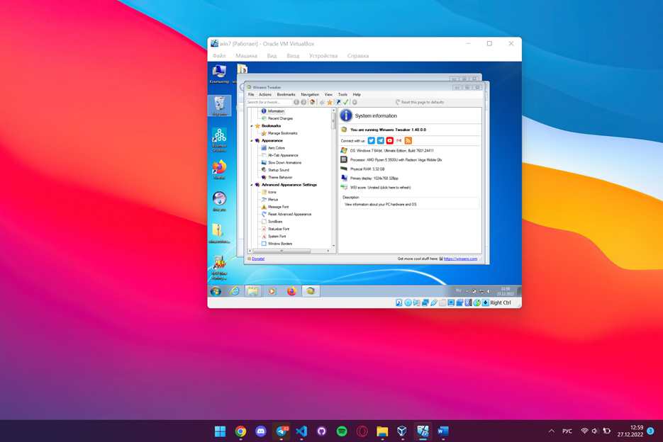

Главное меню
В первом открывающемся меню программа показывает небольшую информацию о системе. Это замер экрана, какая ОС стоит на машине, информация о процессоре, оперативной памяти.
Главное меню
Apperece
Вкладка Apperece позваляет работать с внешним видом системы. В ней можно изменить цвета системы, при желании можно замедлить анимации операционной системы а так же изменить звуки системы.
Apperece
Advantens apperence settings
Так же как и прошлая вкладка позваляет менять оформление системы. А именно: менять стандартные иконки, настраивать всплывающие окна сообщени, менять вид окон.

Advantens apperence settings
Behavior
В этой вкладке находятся определённые настройки для состояния системы. Такие как Настройка действий при команде выключения: выйти из аккаунта, войти в сон. И так далее.Так как по умолчанию система не даёт это изменить. Отключение автоматического сообщения о ошибках Windows. Настройка режима экономии заряда. А именно в каком момент система войдёт в него. Добавление новых сочетаний клавиш. Включение звука при кажатии на кнопу снимка экрана. Отключение возможности системы входить в безопсаный режим.
Behavier
Boot and Logon
Данная вкладка позволяет отключать работу Cntrl+alt+del и Numlock на ввходе в аккаунт.Включить кнопку питания на окне входа. Скрыть имя последнего вошедшего пользователя. И возможность при необходимости отключить проверку диска системой.
Context menu
Данная вкладка позволяет настраивать контекстное меню. Добавляет новый функцианал. Рассмотрим некоторые из них. Добавлить меню фаервола в контекстное меню, меню блютуз, отключение не отвечающих процессом, добавлять возможность запускать определённые файлы от имени администратора. И добавлять свои команды cmd в контекстное меню.
Context menu.
Добасвление команд
Network
Данная вкладка предназначена для работы с сетью. Позволяет отключать роутер от системы, RDP порт
Network
Так же одна из самых важных функций в данном разделе – удобная настройка работы фаервола, через добавление специфических правил.
Shortcats
Данная вкадка позволяет изменить стандартные команды на свои.
Так например стандартную команду выключения системы.(Данная команда была создана самой программой. И при установке она появилась на рабочем столе.) Можно заменить на зарану. Быструю команду. А так же поменять её название.
Вывод
Данная программа позволяет настроить операционную систему под себя. Помимо изменения дизайна она позволяет добавить функции в более удобное место для пользователя. Напимер в